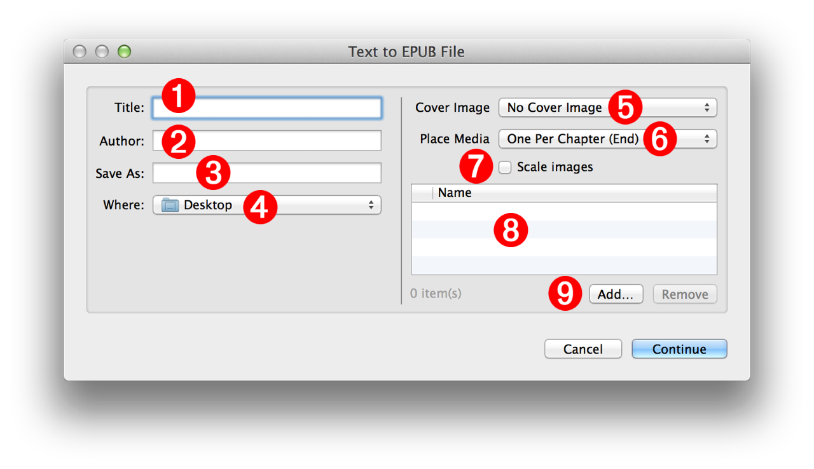

The Text to EPUB action is the tool that turns selected text and media into digital publications. The action’s interface is often displayed during the execution of Automator workflows and services that contain the action. The content of this workshop segment will describe the various elements of the action interface, and their functions. You will use this information in the next workshop segment, where you interact with the action interface during the creation of a digital publication from text selected on a webpage.
The Action Interface
The Text to EPUB action interface, or “action view,” is divided into two sections, a left section and a right section, separated by a vertical line:
- On the left side of the action view are the input fields for determining the created file name and location.
- On the right side of the action view are the controls for adding related images, audio files, or movies.
The following are descriptions for the controls and inputs of each section.
Document Parameters and Metadata: (NOTE: all of these controls will accept Automator workflow variables as input)
1 Title - Enter the title of the book in this text field.
2 Author - Enter the author of the book in this text field. By default, the name of the current user will be used.
3 File Name - Enter the name for the created EPUB document in this text field. EPUB file names must end with a name extension of "epub" like: My Story.epub
4 File Destination - Choose the folder that will contain the created EPUB document from this popup menu.

Optional Media:
5 Cover Image - Optionally, the EPUB book can have a custom cover image. Select the image file to be used as the cover image from this popup menu.
6 Media Placement - Images, audio (.m4a), or video (.m4v) files added to the book are placed one per chapter at either the beginning or end of each chapter. Select the insertion location from this popup menu.
NOTE: additional media files (those unassigned to chapters) will be placed as a group at the end of the book in a chapter titled "Illustrations." For example, if seven images are added to a book containing three chapters, the first three images in the list will be placed one-per-chapter and the remaining four images will be placed in an illustrations chapter at the end of the book.
7 Scale Images - Select this checkbox if you want to reduce the file size of the EPUB document by scaling the images added to the book to fit within 1024 pixels.
8 Media List - A list of the added media files. Files can be added or removed using the controls beneath the list view 9